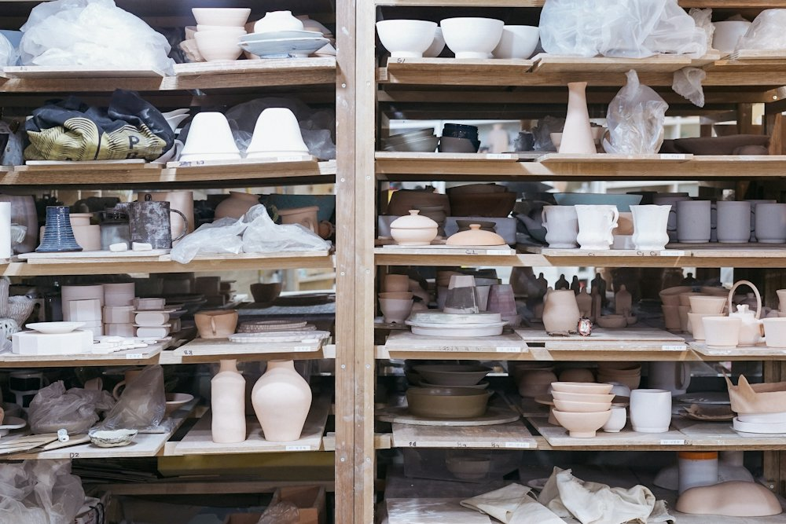
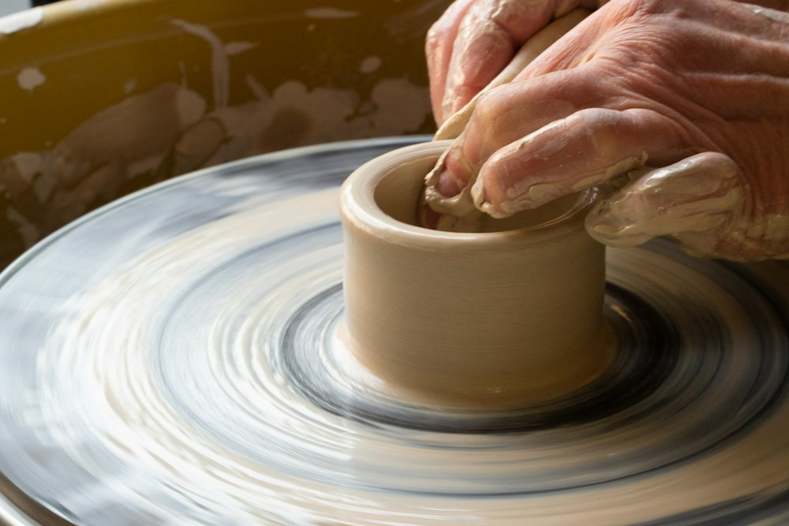
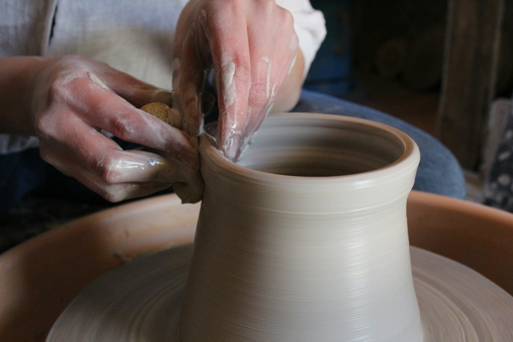
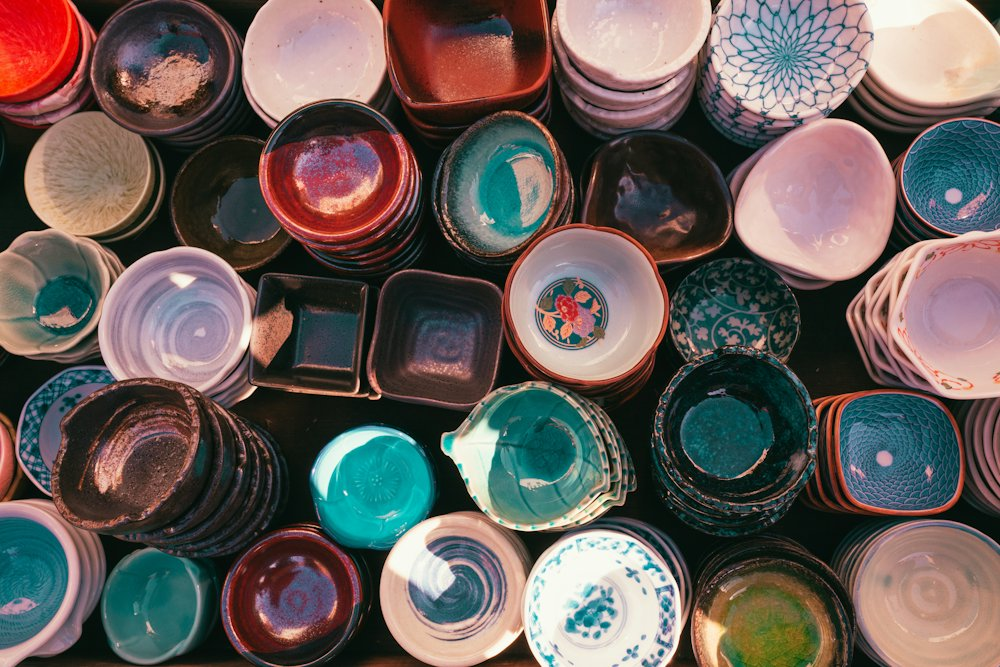
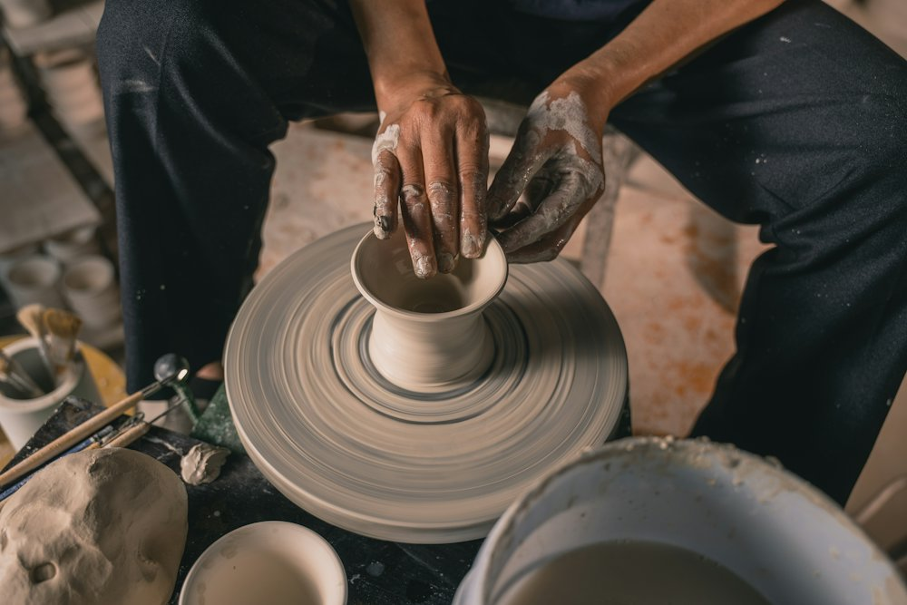

Our story
A family studio in Jaipur making things to be used, mended and handed down.
2014
Ritu learned to throw in a village studio in Rajasthan and brought the craft home. For two years she sold mugs from a bicycle basket before the first proper kiln arrived.
Today seven potters work in our studio, but every shape still starts with someone's hands on clay.
Process




Promises
Every potter is paid above the regional wage, with paid leave and health cover.
Fired hot for durability, with a 30-day return promise and free repairs on chips under warranty.
We ship in recycled corrugate and paper void-fill. No plastic, no peanuts.
Open to visitors Thursday to Sunday, 10 am – 6 pm. Jaipur, Rajasthan.
Book a workshop